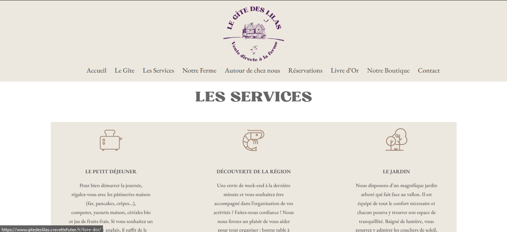

Réalisations

Défi maquette
Cette maquette est un projet que j'ai réalisé suite au visionnage d'une vidéo dont le concept était de relever le défi de réaliser une page d'accueil sur ce support sans aucune autre ressource que cette maquette (aucune police ni logo ni code couleur fourni) et dans un délai d'une heure.

Le Gîte des lilas
Ce projet collectif a été réalisé lors de ma formation aux métiers du numérique avec l'AFPA de lorient, nous devions créer un site avec Wordpress pour un client fictif selon le cahier des charges élaboré par le formateur.